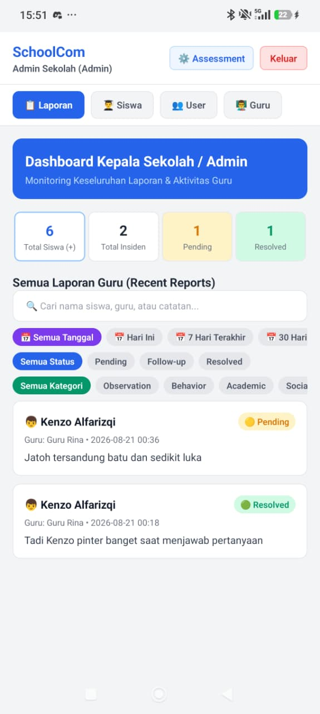
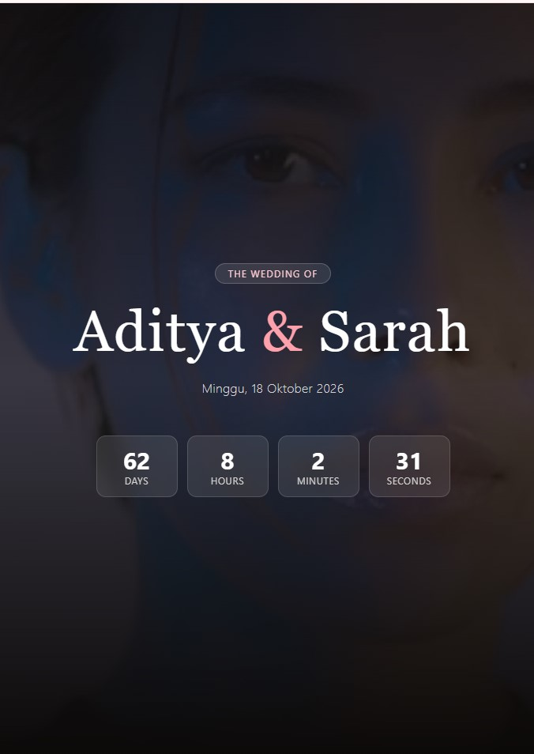
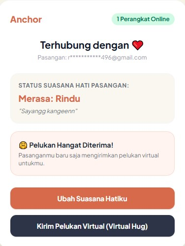

Halo, Saya Muhammad Ulul Albab
Berangkat dari latar belakang Farmasi yang membentuk ketelitian dan daya analisis eksakta tingkat tinggi, saya bertransisi menjadi seorang Fullstack & AI Application Developer. Berfokus pada pembangunan aplikasi web, mobile lintas platform, serta arsitektur backend berkinerja tinggi yang terintegrasi dengan teknologi kecerdasan buatan.

Tentang Saya
Berlatar belakang pendidikan Farmasi, saya memiliki fondasi ketelitian, metode sistematis, dan pola pikir analitis eksakta yang sangat kuat dalam memecahkan masalah. Kemampuan analitis ini saya transformasikan ke dunia pengkodingan untuk merancang solusi digital end-to-end yang presisi, efisien, dan andal.
Saya berpengalaman dalam merancang antarmuka web modern (React / Tailwind), aplikasi mobile Android (React Native / Expo), hingga membangun arsitektur backend berskala produksi menggunakan Laravel, Node.js, dan FastAPI.
Keahlian saya juga mencakup integrasi teknologi AI modern seperti RAG Engine (Gemini API), pencarian berbasis vektor (PostgreSQL pgvector), otomatisasi cloud, serta pengemasan aplikasi terisolasi menggunakan Docker. Saya terbiasa menangani tantangan teknis—mulai dari profil memori hingga keamanan aplikasi—dengan pendekatan yang terstruktur dan berfokus pada kualitas hasil akhir.
Portofolio Pilihan
Klik pada kartu proyek di bawah untuk melihat detail lengkap dan tautan uji coba aplikasi secara langsung.

SchoolCom MVP
Sistem manajemen & komunikasi sekolah terpadu 3-role (Admin, Guru, Orang Tua) berbasis React Native/Expo & Firebase dengan 40 modul teraudit.

Digital Wedding Invitation
Prototipe platform undangan pernikahan digital premium, modern, & responsive berbasis reusable component architecture siap komersialisasi.

ScentDNA
Mesin rekomendasi & semantic search wewangian ter-containerize (Docker) berbasis Vector Embeddings dan RAG Gemini AI dengan optimasi alokasi RAM.

LDR Anchor
Aplikasi mobile interaktif khusus pasangan LDR dengan fitur pembagian suasana hati real-time, pelukan virtual, dan sistem Push Notification otomatis via FCM V1.

Clinical Suite Dashboard
Sistem manajemen klinis fungsional dengan fitur pencatatan data dan kalkulator parameter terstruktur.

Cloud Inventory System
Sistem manajemen inventaris serverless skala produksi dengan dashboard real-time, RBAC, dan proteksi concurrency.

PodLearn AI
Generator podcast audio interaktif 2 pembicara dari dokumen PDF/materi teks lengkap dengan 10 kuis evaluasi otomatis.
Telegram AI Assistant
Bot Telegram cerdas berbasis Llama-3.3 70B yang aktif di cloud 24/7, siap merespons percakapan multibahasa secara instan.
Domain Explorer
Aplikasi penjelajah dan manajemen domain web berbasis Laravel untuk riset ketersediaan, status, serta pengelolaan database domain.

Tertarik Bekerjasama?
Mari diskusikan kebutuhan proyek atau pembuatan aplikasi custom Anda bersama saya.